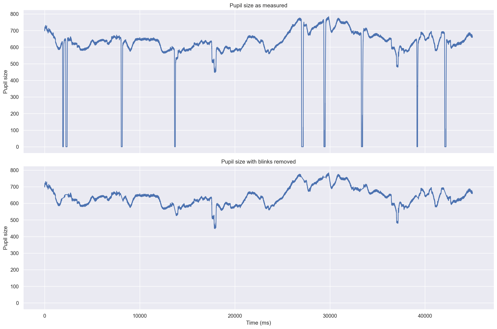
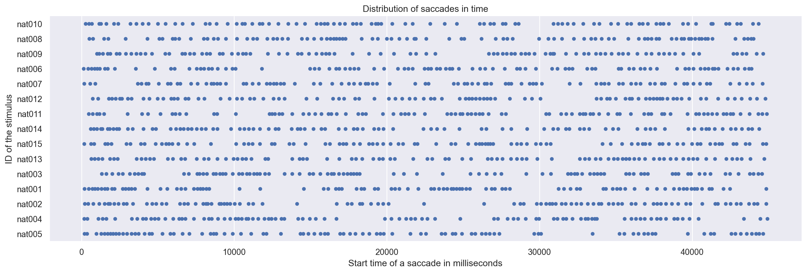
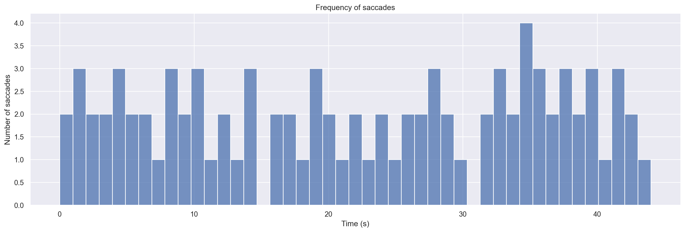
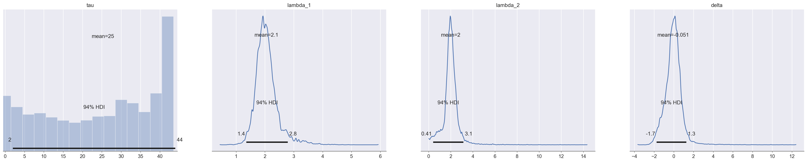
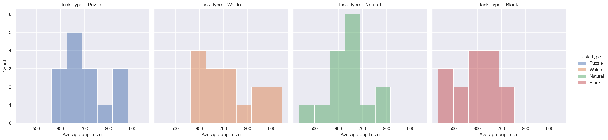

In 2019, the ETRA organization announced a challenge for the analysis of a dataset pertaining to human eye-movement. The objective of the challenge was to utilize various tools to uncover intriguing relationships and information within the data, potentially leading to novel insights. Additional details regarding the challenge can be found in the official Challenge Track Call for Papers issued by ETRA.
Imports and setup
import warnings warnings.simplefilter(action='ignore', category=FutureWarning)# Import librariesimport pandas as pdimport numpy as npimport scipy.stats as statsimport pymc as pmimport seaborn as snsimport matplotlib.pyplot as pltimport arviz as azfrom etra import read_data# Apply the default themesns.set_theme()
Getting data
Download zip file of the dataset. Description of the dataset and how the data was collected can be found on ETRA dataset description.
Download data
from etra import ETRAdataset = ETRA()
The directory data contains the following directories/files
data/ : Contains subdirectories containing data of individual participants. Each subdirectory is filled with CSV files, each containing 45 seconds of eye tracker data.
images/ : Contains the images shown to the participants for each task.
DataSummary.csv : Contains mouse clicks of the participants for tasks like Puzzle or Where’s Waldo.
Hypotheses
We will be interested in the following hypotheses:
Is there a point where a participant becomes tired/bored when viewing a scene? (the frequency of saccades decreases) If so, are some scenes less interesting then others?
There are different types of scenes in the study and some might be more visually stimulating then others. For example, it is not unreasonable to expect that a participant will stay much more engaged in a scene with a lot of detail to study then when looking at a blank scene. Another possibility is that during visual searches (picture puzzles, where is Waldo) a participant may become frustrated and just give up on the task.
The reasoning behind the way we are going to measure this is as follows. When a participant is engaged in a scene, we assume that their gaze is going to dart across the scene rapidly, as they are studying all the details and the number of saccades during a fixed time frame is going to be very high. On the other hand, when subject becomes bored or frustrated, we might expect that they are going to rest their gaze at some point and not move their eyes very much (maybe just waiting for the trial to be over) and so the frequency of saccades would to decrease.
However, the decrease in frequency of saccades might not be exactly indicative of the subjects boredom or frustration. It is not unlikely that the frequency of saccades is high every time a new scene is introduced and naturally decreases as the subject becomes acquainted with the scene.
Whatever the reason might be, if there indeed is such a changing point in the frequency of saccades, it might be interesting to study the time for such change and it’s relationship to participant, scene and task.
Does the pupil size change depending on scene? What about dependence on task?
The motivation behind this hypothesis is that we would like to study the excitement of a subject viewing some scene or performing some task. One of the indicators of excitement might be the change in pupil size (i.e. we expect pupil to dilate during excitement and contract otherwise).
There are various tasks and scenes and the level of excitement (pupil dilation) might differ in each:
in picture puzzles we might expect that the level of excitement is kept high during the whole duration, peaking when subject finds a difference
in Where is Waldo? puzzle we might expect the level of excitement being low as the subject is having difficulties finding Waldo and peaking when (if) Waldo is found
viewing a blank scene might not excite much
Therefore, it is interesting to ask which tasks and scenes are the most stimulating and whether any significant distinction can be made.
Choose an example subject
subject_no =22
Hypothesis 1: Saccade Frequency
We will restrict ourselves only to the following hypothesis:
\(H_0\)(null hypothesis) : The frequency of saccades does not decrease when viewing a scene.
\(H_1\)(alternative hypothesis) : The frequency of saccades decreases at some point in the trial.
Load Data
We will restrict ourselves only to one subject. We have arbitrarily chosen the participant with ID 022. We select and load all Free Viewing data with Natural and Blank scenes. We will be interested in columns:
time : Indicating the time in milliseconds from the beggining of the trail.
x, y : The position on the screen where the participant was looking at the given time.
rp: Pupil size of the right eye.
In Table 1 we provide a sample of the data we will use.
Load data
df_hyp1 = (dataset.data_dir /"data"/"{0:0>3}".format(subject_no)).glob("*FreeViewing_*.csv")df_hyp1 = pd.concat((read_data(f) for f in df_hyp1)).sort_values(by="Time")df_hyp1 = df_hyp1.rename({"Time": "time", "trial_id": "trial", "LXpix": "x", "LYpix": "y", "RP": 'rp'}, axis=1)df_hyp1["time"] = df_hyp1.groupby(["participant_id", "trial"])["time"].transform(lambda x: x - x.min())df_hyp1 = df_hyp1[['participant_id', 'trial', 'fv_fixation', 'task_type', 'stimulus_id','time', 'x', 'y', 'rp']]
Print sample of hypothesis 1 data
df_hyp1.head()
Table 1: Sample of the data for hypothesis 1.
participant_id
trial
fv_fixation
task_type
stimulus_id
time
x
y
rp
0
022
001
FreeViewing
Puzzle
puz008
0
454.42
317.175
585
1
022
001
FreeViewing
Puzzle
puz008
2
454.66
312.000
585
2
022
001
FreeViewing
Puzzle
puz008
4
453.30
312.375
585
3
022
001
FreeViewing
Puzzle
puz008
6
454.10
309.450
587
4
022
001
FreeViewing
Puzzle
puz008
8
454.82
310.725
585
Data Manipulation
First step of the pre-processing will be to remove the blinks. We look at the pupil size and consider every value smaller than some threshold to be an indication of a blink. The average pupil size to be between 1 and 8 mm (“Pupil Diameter,” n.d.). We set 1 mm as our threshold. We will then discard a portion of our data around such points. The average blink duration ranges between 100 and 400 ms (“Average Duration of a Single Eye Blink,” n.d.). We delete another 200 ms before and after each blink/semi-blink to eliminate the initial and final parts in which the pupil was still partially occluded.
before = df_hyp1[df_hyp1.trial =='106'].assign(blinks_removed='No')after = remove_blinks(before).assign(blinks_removed='Yes')hlp = pd.concat([before, after])g = sns.relplot(data=hlp, x='time', y='rp', kind='line', row='blinks_removed', aspect=3)g.set_xlabels("Time (ms)")g.set_ylabels("Pupil size")g.axes[0, 0].set_title("Pupil size as measured")g.axes[1, 0].set_title("Pupil size with blinks removed");

Figure 1: Pupil size data with blinks (top) and with blinks removed (bottom).
For each trial, we will detect saccades using the REMoDNaV python library (Dar, Wagner, and Hanke 2019). This gives us the start and end times of saccades (and other events) as well as additional information such as start and end position of the gaze or peak velocity. We will consider only the start times of the saccades and disregard all other data. Table 2 lists a sample of the processed data.
Function for detecting saccades
from etra import detectdef detect_saccades_by_groups(data, groupby=["participant_id", "trial"]): ans = [] groups = data.groupby(groupby)for (pid, trial), group in groups: tmp = remove_blinks(group) tmp = detect(group) tmp = tmp[tmp["label"] =="SACC"] tmp["participant_id"] = pid tmp["trial"] = trial ans.append(tmp)return pd.concat(ans)
To help us understand how we should model the observations, we first look at the distribution of saccades in time. The \(x\) axis represents the time from the start of a trial and each row is a sequence of dots representing the start time of a saccade.
Plot the distriution of saccades in time
g = sns.catplot( data=df_hyp1_natural_sacc, x='start_time', y='stimulus_id', jitter=False, aspect=3,)g.set_xlabels("Start time of a saccade in milliseconds")g.set_ylabels("ID of the stimulus")g.set(title="Distribution of saccades in time");

Figure 2: Distribution of saccades in time in Natural scenes for one participant.
As the occurance of a saccade is a complex process that depends on the scene viewed, mental state of the participant, tiredness or maybe even things like personal history, eyesight, mood and many other factors, it is impossible for us to accurately predict the occurance of the next saccade. To simplify the situation, we might look at it as on a stochastic process, where for some small enough time interval, we have a fixed probability for an occurance of a saccade.
Let \(N_t\) be a variable counting the number of saccades in a time interval \([0,t]\). Our assumption can be formulated as \[
\lim_{t \to 0} \Pr[N_t \ge 1]/t = \lambda
\] for some \(\lambda \in \mathbb{R}^+\). That is, the probability of an saccade in a small time interval \([0, t]\) tends to \(\lambda t\).
Due to physical human limitations, we also have \[
\lim_{t \to 0} \Pr[N_t \ge 2]/t = 0
\] or said differently, for a small enough time interval, it is impossible to have two or more successive saccades.
The number of saccades in some interval \([t, s]\) can be expressed then as \(N(t) - N(s)\). Additionally, we will assume that for any two disjoint time intervals \([t_1, t_2]\) and \([t_3, t_4]\), the distribution of \(N(t_2) - N(t_1)\) is independent of the distribution of \(N(t_4) - N(t_3)\).
With these assumtions in place, we are justified to model the occurances of saccades as a Poisson process with rate \(\lambda\)(Mitzenmacher and Upfal 2012).
Function for counting the number of saccades each second
def saccade_frequency_count_by_second(data):""" Count the number of saccades in each second of the trial """ bins = (data.start_time //1000).value_counts().sort_index() data = pd.DataFrame({"time": range(45)}) data["sacc_count"] = bins data.fillna(0, inplace=True) data.sacc_count = data.sacc_count.astype(int)return data
The theory of Poisson processes then tells us that the number of saccades in some time period of length \(t\) is a Poisson random variable with expectation \(\lambda t\). We will divide the time of the experiment to seconds (so \(t = 1\)) and count the number of saccades in each second. The Figure 3 illustrates such counts for one chosen trial.
hlp = scene.copy()hlp.start_time = hlp.start_time.apply(lambda ms: ms //1000)g = sns.displot(data=hlp, x='start_time', bins=45, stat="count", aspect=3)g.set_xlabels("Time (s)")g.set_ylabels("Number of saccades")g.set(title=f"Frequency of saccades");

Figure 3: Frequency of saccades in time for one chosen natural scene.
We are looking for a change in behaviour in our participants. To model it we will assume that in some initial time interval the number of saccades will follow some Poisson process with rate \(\lambda_1\) up until some time \(\tau\) after which something changes and the saccades will follow a different process with rate \(\lambda_2\).
Let \(S_t\) denote the count of saccades at time \(t\). We have \[
S_t \sim \mathrm{Poisson}(\lambda^{(t)})
\] However, we do not know what the parameter \(\lambda^{(t)}\) is. It might be either \(\lambda_1\) or \(\lambda_2\) depending on where we put the changing point \(\tau\), so \[
\lambda^{(t)} = \begin{cases}
\lambda_1 && t < \tau \\
\lambda_2 && t \ge \tau
\end{cases}
\]
We will try to infer these variables from our data using Bayesian statistics. We will need to choose prior distributions to do that. For \(\lambda_1\) and \(\lambda_2\) we need to choose from continouous distribution that is able to obtain (potentially) all positive values. Exponential distribution satisfies this requirement, so we set \[
\begin{align*}
\lambda_1 \sim \mathrm{Exp}(\alpha)\\
\lambda_2 \sim \mathrm{Exp}(\alpha)
\end{align*}
\] where \(\alpha\) is some hyper-parameter. As we have no prior knowledge about \(\tau\), we simply choose \[
\tau \sim \mathrm{Unif}(0, 44)
\]
To help with the inference, we set the hyperparameter \(\alpha\) such that \[
\frac{1}{\alpha}
= \mathbb{E}[\lambda \mid \alpha]
\approx \frac{1}{45} \sum_{t = 0}^{44} S_t
\] which is about the value we would expect the \(\lambda\)s to be distributed around.
For our modelling we will use the PyMC(Salvatier, Wiecki, and Fonnesbeck 2016) implementation of Monte Carlo Markov Chains, using the NUTS sampler with default parameters to generate \(5000\) samples from the posterior distribution.
Define model for the saccade frequency
def model_saccades(data):# Get the count data for one chosen trial count_data = saccade_frequency_count_by_second(data) count_data = count_data.sacc_count n_count_data = count_data.shape[0]with pm.Model() as model: alpha =1.0/count_data.mean() lambda_1 = pm.Exponential("lambda_1", alpha) lambda_2 = pm.Exponential("lambda_2", alpha) tau = pm.DiscreteUniform("tau", lower=0, upper=n_count_data -1) index = np.arange(n_count_data) lambda_ = pm.math.switch( tau >= index, lambda_1, lambda_2 ) delta = pm.Deterministic("delta", lambda_2 - lambda_1) observation = pm.Poisson("obs", lambda_, observed=count_data)return model
Run the chain
model = model_saccades(scene)with model: trace = pm.sample(5_000)
Figure 4 shows the posterior distributions of the parameters \(\tau\), \(\lambda_1\), \(\lambda_2\) and \(\Delta = \lambda_2 - \lambda_1\), while Table 3 provides summary statistics from the chain.
Plot the posterior of model parameters
az.plot_posterior(trace);

Figure 4: The posterior distribution of the model parameters.
Print summary statistics of the chain
az.summary(trace)
Table 3: Summary statistics for the example chain.
mean
sd
hdi_3%
hdi_97%
mcse_mean
mcse_sd
ess_bulk
ess_tail
r_hat
tau
23.412
14.961
1.000
44.000
0.478
0.343
925.0
1898.0
1.0
lambda_1
2.072
0.514
1.230
3.034
0.014
0.010
2244.0
1621.0
1.0
lambda_2
1.993
0.739
0.493
3.054
0.014
0.010
3253.0
1812.0
1.0
delta
-0.079
0.913
-1.765
1.312
0.019
0.013
2414.0
2124.0
1.0
Notice that the posterior distribution of \(\Delta\) is centered around 0, leading us to believe there is no change in the the rate of saccades. In case there was a change, we would expect a shift either to the positive or negative side. This notion is further reinforced by looking at the Highest Density Interval (HDI) of the posterior distribution of \(\tau\) which basically spans the entire duration of the trial.
Figure 5 shows the posterior density estimate for \(\Delta\) for all Natural scene trials.
Plot Posterior density of \(\Delta\) for all natural scenes.
statistic ="delta"# Truncate values to 99% most plausiblelow, up = combined_natural.delta.quantile([0.005, 0.995])hlp = pd.DataFrame()hlp[statistic] = combined_natural[statistic].where(combined_natural[statistic].between(low, up))hlp["stimulus"] = combined_natural["stimulus"]hlp.reset_index(inplace=True)g = sns.displot(data=hlp, x=statistic, hue="stimulus", kind="kde", aspect=2)g.ax.axvline(0, color='k', ls='dashed', alpha=0.5)g.set_xlabels("$\Delta$")g.set_ylabels("Probability")g.set(title=f"Posterior density of $\Delta$");
Figure 5: Posterior density of \(\Delta\) for all natural scenes of one chosen subject.
There does seem to be some variability from scene to scene, however, from the graph we can still see that on average the change of the frequencies seems to be centered around zero, even shifted sligtly toward the negative side meaning that it is more probable that the frequency of saccades decreases slightly as time progresses.
Blank scenes
We now repeat the exact same procedure, but for trials with Blank scene.
Sample the posterior distributions for all blank scenes
The situation here is much more diverse in this case. We can see that we can find trials on both ends of the spectrum when considering the change in frequency of saccades. For example, for the trial 094 we have
Pr[ lambda_2 < lambda_1 ] = 0.9917
so there is a very high probability of a decrease in the frequency of saccades at some point in the trial. On the other hand, for trial 061 we have
Pr[ lambda_2 > lambda_1 ] = 0.99975
meaning a high ptobability of an increase in frequency.
This seems quite surprising as one might expect consistent behaviour when viewing the same blank scene multiple times.
Results
Compute the probability of null hypothesis being true
Considering all the blank trials as a whole, the probability of increase in saccades is
Pr[ H_0 ] = Pr[ lambda_2 >= lambda_1 ] = 0.421
which is not low enough to reject the null hypothesis
Discussion
In this section, we will examine certain assumptions that may have influenced the outcome of our model. One assumption made is that the distribution of saccades is independent of the selected time interval for examination. However, it is possible that the number of saccades may vary over time due to factors such as participant fatigue.
Additionally, we have assumed that there is a single point of change within the data. However, it is feasible that there may be multiple points of change or that the change may occur gradually. Further exploration of these possibilities may serve as a means for model improvement.
Furthermore, our model utilizes specific priors for the parameters. While we have chosen what we believe to be conservative priors, alternative options such as Half-Cauchy or Truncated Normal distributions for the \(\lambda\)s should also be considered. Additionally, the selection of hyperparameters should be evaluated. We claim that the choice of hyperparameters did not have a significant impact on the model’s results and served primarily to improve the speed of convergence of the chain.
Lastly, we did not take into account the examination of trials as a cohesive unit. Each trial was analyzed individually, but it is possible that the order, type and difficulty of prior trials may have affected performance on subsequent trials.
Hypothesis 2: Pupil dilation
We will study the following hypotheses:
\(H_0^{(T)}\)(null hypothesis) : The mean pupil size is equal when comparing Blank scene and a type T scene
\(H_1^{(T)}\)(alternative hypothesis) : The mean pupil size is not equal when comparing Blank scene and a type T scene
Load Data
Again, we will limit our analysis to data collected from a single participant, specifically participant ID 022. The participant was selected arbitrarily. We have selected and loaded all data collected during the “Free Viewing” task. Our focus will be on the following columns of the dataset:
time: representing the time in milliseconds elapsed from the beginning of the trial.
Table 5: Average pupil size (right eye) for each task type.
task_type
avg_rp
0
Puzzle
734.91
1
Waldo
664.90
2
Natural
596.14
3
Blank
554.77
4
Waldo
657.94
Exploration
Looking at Figure 7, we can see that there except for the “Natural” scenes there are no significant outliers in any other category. Table 6 lists summary statistics about the average pupil size.
Table 6: Summary statistics for average pupil sizes.
avg_rp
count
mean
std
min
25%
50%
75%
max
task_type
Blank
15.0
589.78
89.22
438.20
537.63
592.73
650.43
711.32
Natural
15.0
635.84
91.14
464.97
587.33
636.75
662.73
797.62
Puzzle
15.0
699.44
89.15
594.43
631.53
664.14
748.29
856.61
Waldo
15.0
724.14
112.28
598.10
627.82
709.60
801.23
941.75
Let us look at the distribution of the means. If we want to use t-test, we want our data to be roughly normally distributed.
Plot the distribution of average pupil sizes
g = sns.displot(data=df_hyp2_avg_rp, x='avg_rp', hue='task_type', col="task_type")g.set_xlabels("Average pupil size")g.set_ylabels("Count");

Figure 8: Distribution of average pupil sizes by task type.
Looking at the graphs in Figure 8, the distribution of the data seems to be roughly normal, however it is hard to gauge this from such a small sample size. We use the Shapiro-Wilk test, which tests the null hypothesis that the data was drawn from a normal distribution.
Compute Shapiro-Wilk test for distribution normality
print("Resulting p-values from the Shapiro-Wilk test:\n")for task_type in ["Blank", "Puzzle", "Waldo", "Natural"]: shapiro_result = stats.shapiro(df_hyp2_avg_rp[df_hyp2_avg_rp.task_type == task_type].avg_rp)print("\t{}\t: {:0.3}".format(task_type, shapiro_result.pvalue))
Resulting p-values from the Shapiro-Wilk test:
Blank : 0.374
Puzzle : 0.0556
Waldo : 0.142
Natural : 0.592
Using signifance level of \(\alpha = 0.05\), we conclude that the data is distributed normally (although this is a bit debatable in the case of the “Puzzle” task).
Results
Given that we are evaluating the same participant across different tasks, it is appropriate to use the paired t-test as the data points are linked to one another. This statistical test allows for the comparison of each task with our chosen baseline, which is the blank scene.
Compute paired t-test for each category with the baseline.
baseline ="Blank"print("Resulting p-values from the paired t-test:\n")for task_type in ["Puzzle", "Waldo", "Natural"]: ttest_result = stats.ttest_ind( df_hyp2_avg_rp[df_hyp2_avg_rp.task_type == baseline].avg_rp, df_hyp2_avg_rp[df_hyp2_avg_rp.task_type == task_type].avg_rp, )print("\t{}\t: {:0.3}".format(task_type, ttest_result.pvalue))
Resulting p-values from the paired t-test:
Puzzle : 0.00222
Waldo : 0.00113
Natural : 0.173
Thus using significance level of \(\alpha = 0.05\), we reject the null hypothesis for the Puzzle and Waldo tasks, meaning the mean pupil size differs from the baseline (greater as can be seen from Figure 7). We were not able to reject the null hypothesis in case of the Natural task.
Discussion
Another interesting metric to consider might be the number of times the pupil size peaks and the count of such peaks.
Dar, Asim H., Adina S. Wagner, and Michael Hanke. 2019. “REMoDNaV: Robust Eye-Movement Classification for Dynamic Stimulation,” April. https://doi.org/10.1101/619254.
Mitzenmacher, Michael, and Eli Upfal. 2012. Probability and Computing Randomized Algorithms and Probabilistic Analysis. Cambridge Univ. Press.
Salvatier, John, Thomas V. Wiecki, and Christopher Fonnesbeck. 2016. “Probabilistic Programming in Python Using PyMC3.”PeerJ Computer Science 2 (April): e55. https://doi.org/10.7717/peerj-cs.55.